A1:ilgarilanma harakat qilayotgan jismning barcha
nuqtalari bir xil ko'chadi.
A2:aylanish o'qi atrofidagi aylanma harakatida
jismning barcha nuqtalari bir xil ko'chadi.
A3:ilgarilanma harakatda bo'lgan jism doimo tekis
harakat qiladi.
A4:ilgarilanma harakat qilayotgan jismning har xil
nuqtalarining ko'chishi har xil bo'ladi.
ftp-01-001: Kinematika-1ID: ftp-01-001-02
Yerga nisbatan v1=4 m/s, v2=3 m/s tezliklar
bilan harakatlanayotgan platformalar ustida
platformalarga nisbatan v_{1o}=3 m/s va v_{2o}=4 m/s
tezliklar bilan ikki odam rasmda ko'rsatilganidek
harakatlanmoqda. Odamlarning nisbiy tezlik
moduli (m/s) qanday? (odamning harakati
platformaning harakatiga ta'sir ko'rsatmaydi).
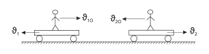
A1:7.
A2:0.
A3:2.
A4:1.
ftp-01-001: Kinematika-1ID: ftp-01-001-03
Gorizont bilan π/3 burchak hosil qilgan qiyalik
bo'ylab jism yuqoriga 5 m/s tezlik bilan
ko'tarilmoqda. U 8 s da vertikal yo'nalishda
qanchaga ko'chadi (m)?3 ≈1,73.
A1:25.
A2:34,6.
A3:46,8.
A4:43,3.
ftp-01-001: Kinematika-1ID: ftp-01-001-04
Jismning tekislikdagi harakat tenglamalari
x(t)=at+b va y(t)=ct+d ko'rinishga ega. Bu
jismning trayektoriya tenglamasini tuzing.
A1:y=(c/a)x-bc/a.
A2:y=(c/a)x+d.
A3:y=(c/a)x+bc/a+d.
A4:y=(c/a)x-bc/a+d.
ftp-01-001: Kinematika-1ID: ftp-01-001-05
Vaznsiz blok orqali cho'zilmaydigan ip o'tkazilib
uning ikki uchiga yuklar mahkamlangan. Agar
yuklardan biri qo'zg'almas qilib ushlanib turilib,
blok o'qi yuqoriga 4 m/s tezlikda ko'tarilsa,
ikkinchi yuk yerga nisbatan qanday tezlikda
harakatlanadi (m/s)?
A1:2.
A2:8.
A3:6.
A4:4.
ftp-01-001: Kinematika-1ID: ftp-01-001-06
Avtomobil yo'lning 2/3 qismida 54 km/h, qolgan
qismida 36 km/h tezlik bilan harakatlangan
bo'lsa, uning butun yo'ldagi o'rtacha tezligi
qanday bo'lgan (m/s)?
A1:12.
A2:12,85.
A3:14,8.
A4:16,5.
ftp-01-001: Kinematika-1ID: ftp-01-001-07
Jism koordinatalari A (-1; -1,5; -3) bo'lgan
nuqtadan koordinatalari B (0; 0; 0) bo'lgan
nuqtaga 8 sekund davomida, undan keyin esa C
(1; 1,5; 3) nuqtaga 4 sekund davomida ko'chdi.
Jismning butun yo'l davomidagi o'rtacha
tezligining o'rtacha ko'chish tezligiga nisbati
qanday?
A1:1.
A2:1/3.
A3:1/2.
A4:1/4.
ftp-01-001: Kinematika-1ID: ftp-01-001-08
Jism boshlang'ich tezliksiz tekis tezlanuvchan
harakat qilgan. Agar yo'lning birinchi yarmini 10
minutda bosib o'tgan bo'lsa, yo'lning ikkinchi
yarmini qancha vaqtda (min) bosib o'tgan?
A1:5.
A2:52.
A3:10(2+1).
A4:10(2−1).
ftp-01-001: Kinematika-1ID: ftp-01-001-09
Uzoq masofaga uchayotgan kosmik kemaning
tezligi harakat boshidan 1 soat o'tgach 1000 km/s
ga yetdi. Kemaning tezlanishini toping (m/s2).
A1:0,278.
A2:100.
A3:278.
A4:1000.
ftp-01-001: Kinematika-1ID: ftp-01-001-10
Chang'ichi 0,4 m/s2 tezlanish bilan harakatlanib,
100 m yo'lni 20 s da o'tdi. Uning yo'l boshidagi va
oxiridagi tezliklari qanday (m/s)?
A1:0; 8.
A2:1; 9.
A3:1; 10.
A4:2; 8.
ftp-01-001: Kinematika-1ID: ftp-01-001-11
Moddiy nuqtaning harakat tenglamasi x=3t2 - 4t
(m) ko'rinishga ega. U harakatining 4-sekundida
qanday masofani (m) bosib o'tadi?
A1:20.
A2:19.
A3:25.
A4:17.
ftp-01-001: Kinematika-1ID: ftp-01-001-12
Rasmda moddiy nuqta tezligining vaqtga
bog'liqlik grafigi tasvirlangan. Vaqt t=7,3 s
bo'lganda tezlik (m/s) qancha bo'lgan?
A1:9,4.
A2:10,1.
A3:9,8.
A4:9,1.
ftp-01-001: Kinematika-1ID: ftp-01-001-13
Jism bosib o'tgan yo'lining vaqtga bog'lanish
grafigi paraboladan iborat. Jismning harakat
boshidan 2 s ichidagi o'rtacha tezligini toping
(m/s).
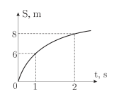
A1:8.
A2:7.
A3:10.
A4:4.
ftp-01-001: Kinematika-1ID: ftp-01-001-14
To'g'ri chiziqli tekis sekinlanuvchan harakat
qilayotgan jism beshinchi sekundda 5 m yo'l bosdi
va to'xtadi. Harakatning ikkinchi sekundida jism
qanday yo'l (m) bosib o'tadi?
A1:35.
A2:14.
A3:25.
A4:75.
ftp-01-001: Kinematika-1ID: ftp-01-001-15
Tekis tezlanuvchan harakat qilayotgan jism ikkita
ketma-ket t vaqtlar oralig'ida S1 va S2 yo'llarni
mos ravishda bosib o'tgan bo'lsa, jismning
tezlanishi nimaga teng?
A1:t2S2−S1.
A2:t2(S2−S1).
A3:2t2(S1−S2).
A4:t22(S1+S2).
ftp-01-001: Kinematika-1ID: ftp-01-001-16
245 m balandlikda joylagan A nuqtadagi jism tik
pastga erkin tushishni boshlagan momentda B
nuqtadagi manbadan tovush tarqatildi. Agar
tovush 1 s o'tgach jismga yetib kelgan bo'lsa,
tovushning havoda tarqalish tezligini aniqlang
(m/s). g=10 m/s2.
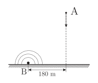
A1:320.
A2:300.
A3:333.
A4:340.
ftp-01-001: Kinematika-1ID: ftp-01-001-17
Balandligi 35 m bo'lgan minora tomidan 30 m/s
tezlik bilan tik yuqoriga tosh otildi. U qancha
vaqtdan so'ng yerga tushadi (s)? g=10 m/s2.
A1:6,5.
A2:7.
A3:8.
A4:9.
ftp-01-001: Kinematika-1ID: ftp-01-001-18
Jism 10 m/s tezlik bilan tik yuqoriga otildi va
ma'lum vaqtdan keyin yerga qaytib tushdi.
Jismning yo'l grafigini ko'rsating. Havoning
qarshiligi inobatga olinmasin. g=10 m/s2.
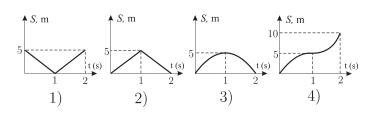
A1:1.
A2:2.
A3:3.
A4:4.
ftp-01-001: Kinematika-1ID: ftp-01-001-19
Bir jism h1 balandlikdan erkin tushmoqda. U
bilan bir paytda kattaroq h2 balandlikdan boshqa
jism erkin tusha boshladi. Ikkala jism yerga bir
vaqtda tushishi uchun ikkinchi jismning
boshlang'ich tezligi qanday bo'lishi kerak?
A1:2gh1(h2−h1)/2h1.
A2:2gh1/2h1.
A3:2gh1(h2−h1)/2h1.
A4:2gh1(h1−h2)/2.
ftp-01-001: Kinematika-1ID: ftp-01-001-20
Erkin tushayotgan jism qandaydir nuqtada 20
m/s, boshqa bir nuqtada esa 40 m/s tezliklarga
ega bo'lsa, shu nuqtalar orasidagi masofada
o'rtacha tezlikni (m/s) toping. g=10 m/s2.
A1:27.
A2:25.
A3:30.
A4:33.
ftp-01-001: Kinematika-1ID: ftp-01-001-21
Ikkita sharcha biror balandlikdan erkin
tushmoqda. Ikkinchi sharcha yo'lning yarmida
yupqa shishaga urildi va tezligini 50 % ini
yo'qotdi. Sharchalarning yerga urilishdagi
tezliklari nisbatini toping. g=10 m/s2.
A1:1,26.
A2:10/3.
A3:50/41.
A4:1,12.
ftp-01-001: Kinematika-1ID: ftp-01-001-22
Vertikal pastga otilgan jismning harakat boshidan
4 s o'tgan paytdagi tezligi 45 m/s bo'lsa, 1 s avval
uning tezligi (m/s) qanday bo'lgan? g=10 m/s2.
A1:25.
A2:20.
A3:30.
A4:35.
ftp-01-001: Kinematika-1ID: ftp-01-001-23
Gorizontga 25° burchak ostida otilgan tosh
ko'tarilish balandligining uchish uzoqligiga
nisbatini toping. sin25°=0,4226, tg25°=0,4663.
A1:0,041.
A2:0,067.
A3:0,091.
A4:0,117.
ftp-01-001: Kinematika-1ID: ftp-01-001-24
Jism gorizontga π/6 burchak ostida 30 m/s tezlik
bilan otildi. Trayektoriyaning eng yuqori
nuqtasida jism tezligining moduli nimaga teng
(m/s)?
A1:24,2.
A2:26.
A3:30.
A4:20,3.
ftp-01-001: Kinematika-1ID: ftp-01-001-25
Bir nuqtadan ikkita jism bir vaqtda otildi:
birinchisi tik pastga erkin tashlandi, ikkinchisi
gorizontal yo'nalishda biror tezlik bilan otildi.
Jismlar orasidagi masofa ...... ga bog'liq emas.
A1:ikkinchi jism otilgan tezlik.
A2:erkin tushish tezlanishi.
A3:harakat vaqti.
A4:erkin tushish tezlanishi va harakat vaqti.
ftp-01-001: Kinematika-1ID: ftp-01-001-26
Aylana trayektoriya bo'ylab 3 m/s tezlik bilan
harakatlanayotgan jism 24 s davomida 6 marta
aylandi. 3 s davomida uning chiziqli tezlik vektori
necha gradusga buriladi?
A1:45°.
A2:90°.
A3:180°.
A4:270°.
ftp-01-001: Kinematika-1ID: ftp-01-001-27
Ikki shkiv tasmali uzatma orqali ulangan.
Yetaklovchi shkiv 600 ayl/min tezlik bilan
aylanganda yetaklanuvchi shkiv 3000 ayl/min
tezlikka ega bo'lishi uchun yetaklovchi shkivning
radiusi qanday bo'lishi kerak (cm)? Yetaklanuvchi
shkivning radiusi 10 cm.
A1:30.
A2:60.
A3:40.
A4:50.
ftp-01-001: Kinematika-1ID: ftp-01-001-28
Gorizontal yo'lda 54 km/h tezlikda ketayotgan
avtomobil g'ildiragining burchak tezligi 50 rad/s
ga teng. G'ildirak gardishidagi nuqtaning yerga
nisbatan tezlanishini toping (km/s2).
A1:75.
A2:0,75.
A3:1,5.
A4:0.
ftp-01-001: Kinematika-1ID: ftp-01-001-29
Moddiy nuqta aylana bo'ylab 2 m/s tezlik bilan
harakatlanmoqda. Nuqta tezligining moduli
o'zgarib 4 m/s ga yetdi. Bunda uning. . . . . .
A1:aylanish davri 4 marta kamaydi.
A2:aylanish chastotasi 2 marta kamayadi.
A3:aylanish chastotasi 2 marta oshadi.
A4:aylanish davri 2 marta ortdi.
ftp-01-001: Kinematika-1ID: ftp-01-001-30
Aylanayotgan g'ildirakdagi bir nuqtaning tezligi
ikkinchisinikidan 7 marta ortiq. Bu ikki nuqtaning
markazga intilma tezlanishlari qanday farq qiladi?
A1:10,5.
A2:49.
A3:7.
A4:2,65.
ftp-01-002: Kinematika-2ID: ftp-01-002-01
Jismning mexanik harakatini o'rganishda nima uchun
koordinatalar sistemasidan foydalaniladi?
A1:jismning harakatda yoki harakatsiz ekanligini
aniqlash uchun.
A3:jismning fazodagi vaziyatini vaqt o'tishi bilan
qanday o'zgarishini aniqlash uchun.
A4:jismning boshqa jismlarga nisbatan tinchlikda yoki
harakatda ekanligini aniqlash uchun.
ftp-01-002: Kinematika-2ID: ftp-01-002-02
Harakatini A nuqtadan boshlagan jismning I sanoq
sistemasiga nisbatan harakat qonuniyati x = 3 - 2t + t2
(m) ko'rinishida bo'lsa, uning II sanoq sistemasiga
nisbatan harakat qonuniyati qaysi ko'rinishda bo'ladi
(m)?
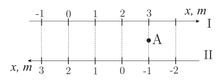
A1:x=2t−t2−1.
A2:x=−2t+t2−1.
A3:x=−2t−t2−1.
A4:x=2t+t2−1.
ftp-01-002: Kinematika-2ID: ftp-01-002-03
v = const tenglik qanday harakatni ifodalaydi?
A1:to'g'ri chiziq bo'ylab tekis harakatni.
A2:aylana bo'ylab tezligining son qiymati o'zgarmas
bo'lgan harakatni.
A3:aylana bo'ylab teng vaqtlar oralig'ida bir xil uzunlikdagi aylana yoyini bosib o'tadigan jismning harakatini.
A4:to'g'ri chiziq bo'ylab teng vaqtlar oralig'ida bosib o'tadigan yo'li bir xil oshib boradigan jismning harakatini.
ftp-01-002: Kinematika-2ID: ftp-01-002-04
Pastda Ox o'qi bo'ylab harakatlangan jism
tezlanishining vaqtga bog'lanish grafigi keltirilgan.
Agar jismning boshlang'ich tezligi v0=6 m/s bo'lsa,
jismning tezlik grafigi qaysi ko'rinishda bo'ladi?
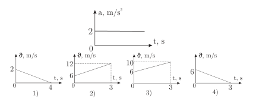
A1:1.
A2:2.
A3:3.
A4:4.
ftp-01-002: Kinematika-2ID: ftp-01-002-05
Jism bir inersial sanoq sistemasida 10 m/s, ikkinchi
sanoq sistemasida 5 m/s tezlik bilan to'g'ri chiziqli
harakat qilayotgan bo'lsa, ikkinchi sistema ham
inersialmi?
A1:ha, chunki jism tekis harakat qilayotgan ixtiyoriy
sanoq sistemasi inersial hisoblanadi.
A2:ha, chunki jism ikkala sistemada ham tezlanishga
ega emas.
A3:yo'q, chunki jismning ikkinchi sanoq sistemasidagi
tezligi boshqacha.
A4:yo'q, chunki jism faqat bitta inersial sanoq
sistemada tekis harakat qilishi mumkin.
ftp-01-002: Kinematika-2ID: ftp-01-002-06
Ikkita jismning harakat tenglamalari x1 = 3 - 2t (m)
va x2 = 21 + 15t (m) ko'rinishga ega. Ikkinchi jism
tezlik modulining birinchi jism tezlik moduliga
nisbatini toping.
A1:-7,5.
A2:7,5.
A3:-3.
A4:3.
ftp-01-002: Kinematika-2ID: ftp-01-002-07
Quyida moddiy nuqtaning tezlik grafigi berilgan.
Moddiy nuqta harakatlanish vaqtining birinchi
yarmida bosib o'tgan yo'lning ikkinchi yarmida bosib
o'tgan yo'liga nisbatini aniqlang.
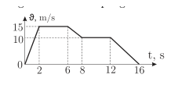
A1:2/3.
A2:3/2.
A3:5/3.
A4:3/5.
ftp-01-002: Kinematika-2ID: ftp-01-002-08
Quyidagi grafikda jism tezligining ko'chishiga bog'liqlik
grafigi keltirilgan. Jismning tezlanishini (m/s2)
aniqlang.
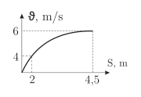
A1:40.
A2:2.
A3:100.
A4:4.
ftp-01-002: Kinematika-2ID: ftp-01-002-09
Quyida jism koordinatasining vaqtga bog'lanish grafigi
berilgan. Jismning ko'chish modulini (m) aniqlang.
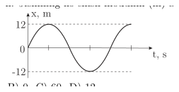
A1:24.
A2:0.
A3:60.
A4:12.
ftp-01-002: Kinematika-2ID: ftp-01-002-10
Sharqdan 100 km/h tezlikda shamol esmoqda. Tezligi
100 km/h bo'lgan vertolyot qanday kursni tanlasa,
aniq shimoliy yo'nalishda ucha oladi?
Avtomobil manzilgacha bo'lgan 80 km masofaning
yarmini 60 km/h tezlik bilan, qolgan yarmini 75 km/h
tezlik bilan o'tdi. Uning boshlang'ich 1 soatdagi
o'rtacha tezligini toping (km/h).
A1:65.
A2:66,7.
A3:67,5.
A4:70.
ftp-01-002: Kinematika-2ID: ftp-01-002-12
Darsga kelayotgan o'quvchi oldin yo'lning 3 km ini 20
min da bosib o'tdi va yo'lda uxlab qoldi. Uyg'ongach
qolgan 3 km yo'lni yana 20 min da bosib o'tib, darsga
kechikib keldi. Agar o'quvchining butun yo'ldagi
o'rtacha tezligi 3 km/h bo'lsa, u yo'lda necha minut
uxlab qolgan?
A1:90.
A2:70.
A3:80.
A4:60.
ftp-01-002: Kinematika-2ID: ftp-01-002-13
Mototsikl 3,6 km/h boshlang'ich tezlik bilan tekis
tezlanuvchan harakat qilib, biror masofani o'tdi va 25,2
km/h tezlikka erishdi. Shu masofaning yarmida uning
tezligi qanday bo'lgan (m/s)?
A1:3,5.
A2:4.
A3:5.
A4:6.
ftp-01-002: Kinematika-2ID: ftp-01-002-14
Jism bosib o'tgan yo'lining vaqtga bog'lanish grafigi
paraboladan iborat. Jismning tezlanishini toping
(m/s2).
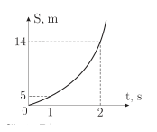
A1:7.
A2:5.
A3:4.
A4:3.
ftp-01-002: Kinematika-2ID: ftp-01-002-15
Moddiy nuqta v = 3,75 i −(5 - 5t)j (m/s) qonuniyat
bo'yicha harakatlanmoqda. Uning 1 s dan keyingi
tezlanishini toping (m/s2).
A1:5.
A2:2,5.
A3:8,5.
A4:6.
ftp-01-002: Kinematika-2ID: ftp-01-002-16
Erkin tushayotgan jismning 2- va 5-sekund oxiridagi
tezliklari nisbatini aniqlang.
A1:0,216.
A2:0,4.
A3:0,6.
A4:1,67.
ftp-01-002: Kinematika-2ID: ftp-01-002-17
Balandligi 80 m bo'lgan minora tomidan 30 m/s tezlik
bilan tik yuqoriga tosh otildi. U yerga qanday tezlik
bilan tushadi (m/s)? g=10 m/s2.
A1:40.
A2:45.
A3:50.
A4:55.
ftp-01-002: Kinematika-2ID: ftp-01-002-18
Qiyalik burchagi α = 60° bo'lgan qiya tekislik ustiga
K jism qo'yilgan. K jism pastga vertikal holda erkin
tushishi uchun qiya tekislikka gorizontal yo'nalishda
qanday tezlanish (m/s2) berish kerak? g=10 m/s2.
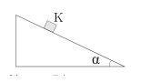
A1:5.
A2:5,8.
A3:2,9.
A4:17,3.
ftp-01-002: Kinematika-2ID: ftp-01-002-19
Ikki jism τ vaqt oralatib, bir xil v0boshlang'ich tezlik
bilan tik yuqoriga otildi. Ikkinchi jism birinchi jismga
nisbatan qanday tezlikda harakatlanadi?
A1:gτ−v0.
A2:v0−gτ.
A3:gτ.
A4:v0/g+τ.
ftp-01-002: Kinematika-2ID: ftp-01-002-20
Oydagi tajribada 1-jism tik yuqoriga 25 m/s tezlik
bilan otildi, 16 s o'tgach 2-jism birinchisining ketidan
yana shunday tezlik bilan tik otildi. To'qnashuv
oldidan 2-jismning tezlik moduli (m/s) qanday bo'ladi?
g=5/3 m/s2.
A1:40/3.
A2:14.
A3:38/3.
A4:41/3.
ftp-01-002: Kinematika-2ID: ftp-01-002-21
Erkin tushayotgan jism qandaydir nuqtada 10 m/s
tezlikka erishdi va shu tezlikdan boshlab tushib 75 m
masofani bosib o'tishda uning o'rtacha tezligi 25 m/s ni
tashkil qilgan bo'lsa, jism ushbu masofani bosib o'tish
so'nggida qanday tezlikka (m/s) erishgan? g=10 m/s2.
A1:40.
A2:60.
A3:30.
A4:50.
ftp-01-002: Kinematika-2ID: ftp-01-002-22
Gorizontga 45° burchak ostida otilgan jismning 0,8 s
dan keyingi harakati yuqoriga bo'lib, tezlikning
vertikal tashkil qiluvchisi 12 m/s ga teng. Jismni otish
nuqtasidan tushish nuqtasigacha bo'lgan masofani (m)
toping. g=10 m/s2.
A1:200.
A2:80.
A3:120.
A4:60.
ftp-01-002: Kinematika-2ID: ftp-01-002-23
A nuqtadan boshlang'ich tezliksiz erkin tashlangan
jism qiya tekislikka mutloq elastik urilib qaytdi va
yerdagi B nuqtaga kelib tushdi. Agar jismning
umumiy harakat vaqti 3 s bo'lsa, jismning ko'chish
modulini toping (m). g=10 m/s2.
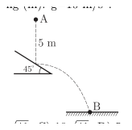
A1:541.
A2:41.
A3:1041.
A4:5.
ftp-01-002: Kinematika-2ID: ftp-01-002-24
Baland minora tomidan jism 5 m/s tezlik bilan vertikal
yuqoriga otildi. Bu jism 3 s da qanday masofaga (m)
ko'chadi? g=10 m/s2.
A1:30.
A2:45.
A3:35.
A4:40.
ftp-01-002: Kinematika-2ID: ftp-01-002-25
Balandligi 25 m bo'lgan minoradan gorizontal
yo'nalishda 10 m/s tezlik bilan tosh otildi. U minora
asosidan qanday masofada yerga tushadi (m)? g=9,8
m/s2.
A1:5,1.
A2:15,1.
A3:22,4.
A4:22,6.
ftp-01-002: Kinematika-2ID: ftp-01-002-26
Rasmda sirpanmasdan dumalayotgan disk
tasvirlangan. Agar uning A nuqtasining yerga nisbatan
tezligi 10 m/s bo'lsa, B nuqtasining yerga nisbatan
tezligi (m/s) qanday?
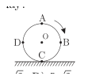
A1:0.
A2:5.
A3:102.
A4:52.
ftp-01-002: Kinematika-2ID: ftp-01-002-27
Gorizontal sirt bo'ylab radiusi 1 m bo'lgan g'ildirak
sirpanishsiz o'ngga g'ildiramoqda. G'ildirak
gardishidagi A nuqtaning yerga nisbatan tezligi 2 m/s
bo'lsa, B nuqtaning yerga nisbatan tezlanishini (m/s2)
toping.
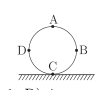
A1:0,5.
A2:2.
A3:1.
A4:4.
ftp-01-002: Kinematika-2ID: ftp-01-002-28
Bitta aylanada ikkita jism bir yo'nalishda ω1=3 rad/s
va ω2=4 rad/s burchak tezliklar bilan
harakatlanmoqda. Agar birinchi jismning boshlang'ich
burilish burchagi π/3 rad ga va ikkinchisiniki nolga
teng bo'lsa, qancha vaqt o'tgach jismlar uchrashadilar
(s)?
A1:π/6.
A2:π/3.
A3:π/10.
A4:π/4.
ftp-01-002: Kinematika-2ID: ftp-01-002-29
Ikki nuqta radiuslari mos ravishda R1 va R2 (R2 = 3R1)
bo'lgan aylanalar bo'ylab v1 va v2 (v2 = 3v1) tezliklar
bilan tekis harakatlanmoqda. Ularning markazga
intilma tezlanishlarini taqqoslang.
A1:a2=3a1.
A2:a2=4a1.
A3:a2=9a1.
A4:a1=3a2.
ftp-01-002: Kinematika-2ID: ftp-01-002-30
Avtomobil 18 km/h tezlik bilan harakatlanmoqda.
Uning diametri 80 cm bo'lgan g'ildiragining burchak
tezligini toping (rad/s).
A1:0,25.
A2:0,9.
A3:12,5.
A4:45.
ftp-01-003: Kinematika-3ID: ftp-01-003-01
Quyidagi o'lchov birliklarining qaysilari XBS ning
asosiy birliklariga mansub?
1) genri (H); 2) kilogramm (kg); 3) amper (A);
4) sekund (s); 5) kelvin (K); 6) m/s; 7) nyuton
(N); 8) joul (J); 9) metr (m).
A1:1,2,3.
A2:2,6,7,9.
A3:2,3,4,5,9.
A4:3,4,5.
ftp-01-003: Kinematika-3ID: ftp-01-003-02
Yomg'ir tomchilari 6,6 m/s tezlik bilan tik
tushmoqda. Truba qiya o'rnatilgan arava
gorizontal sirt bo'ylab chapga 2,2 m/s tezlik bilan
harakatlanmoqda. Tomchilar truba ichida uning
o'qiga parallel harakatlanishi uchun truba qaysi
tarafga og'gan bo'lishi va vertikal bilan qanday
burchakni tashkil etishi kerak?
A1:o'ngga, arctg(1/3).
A2:o'ngga, arctg3.
A3:chapga, arctg(1/3).
A4:chapga, arctg3.
ftp-01-003: Kinematika-3ID: ftp-01-003-03
Jadvalda harakatdagi 4 ta jismning Ox o'qidagi
koordinatalarini vaqtga (0-5 s oralig'ida) bog'liqlik
qiymatlari keltirilgan. Jismlardan qaysi birining
tezligi vaqt davomida o'zgarmagan va noldan
farqli bo'lgan?
t,s
0
1
2
3
4
5
x1, m
0
2
4
6
8
10
x2, m
2
2
2
2
2
2
x3, m
0
1
4
9
16
20
x4, m
0
2
0
-2
0
2
A1:2.
A2:1.
A3:4.
A4:3.
ftp-01-003: Kinematika-3ID: ftp-01-003-04
Ikkita jism harakat tenglamalari mos ravishda
x=10−15t (m) va y=30+20t (m). Birinchi jism x
o'qda, ikkinchisi y o'qda harakatlanmoqda. Bu
jismlarning nisbiy tezligini toping (m/s).
A1:25.
A2:35.
A3:30.
A4:20.
ftp-01-003: Kinematika-3ID: ftp-01-003-05
Ovchi o'zidan 30 m masofada 3 m/s tezlik bilan
gorizontal yo'nalishda uchib o'tayotgan qushga o'q
otib unga tekkizishi uchun qushdan necha
santimetr oldinni nishonga olishi kerak? O'q
tezligi 600 m/s. Qush va o'qning harakati to'g'ri
chiziqli tekis harakat deb hisoblansin.
A1:0,15.
A2:0,3.
A3:30.
A4:15.
ftp-01-003: Kinematika-3ID: ftp-01-003-06
Oniy tezlik deb nimaga aytiladi?
A1:jismning berilgan paytdagi yoki nuqtadagi
tezligi.
A2:jismning kichik vaqt davomidagi tezligi.
A3:jismning butun yo'l davomidagi tezligi.
A4:jismning o'rtacha tezligi.
ftp-01-003: Kinematika-3ID: ftp-01-003-07
Jism to'g'ri chiziq bo'ylab 6 km masofani 24 km/h
tezlik bilan bosib o'tdi. So'ngra harakat
yo'nalishiga tik ravishda 32 km/h tezlik bilan
harakatlandi. Butun yo'ldagi o'rtacha tezligi 28
km/h ga teng bo'lsa, uning ko'chishini toping
(km).
A1:10.
A2:20.
A3:15.
A4:5.
ftp-01-003: Kinematika-3ID: ftp-01-003-08
Jism boshlang'ich tezliksiz tekis tezlanuvchan
harakat qilgan. Uni yo'lning birinchi yarmidagi
o'rtacha tezligi 3 m/s bo'lsa, yo'lning ikkinchi
yarmidagi o'rtacha tezligini (m/s) aniqlang.
A1:3(2+1).
A2:32.
A3:6.
A4:3.
ftp-01-003: Kinematika-3ID: ftp-01-003-09
Tinch holatdan boshlab tekis tezlanuvchan
harakat qilayotgan jismning 4-sekundda o'tgan
yo'li 3-sekundda o'tgan yo'lidan necha marta farq
qiladi?
A1:7/3.
A2:7/5.
A3:16/9.
A4:16/3.
ftp-01-003: Kinematika-3ID: ftp-01-003-10
Poyezd ikki stansiya orasidagi masofani 36 km/h
o'rtacha tezlik bilan 25 minutda o'tdi. Tezlanish
va tormozlanish uchun 5 minut vaqt ketdi. Qolgan
vaqtda u tekis harakat qildi. Tekis harakatda
tezlik qanday (km/h) bo'lgan?
A1:30.
A2:40.
A3:45.
A4:50.
ftp-01-003: Kinematika-3ID: ftp-01-003-11
Nuqtaning koordinatasi x=3t2 - 5t ([x]=m, [t]=s)
tenglama bo'yicha o'zgaradi. Bu harakat
tezligining vaqtga bog'lanishi qanday (m/s)?
A1:v=5+6t.
A2:v= -5+6t.
A3:v=5+3t.
A4:v=-5+3t.
ftp-01-003: Kinematika-3ID: ftp-01-003-12
Mototsikl to'g'ri chiziq bo'ylab tinch holatdan
harakatlana boshladi. Yo'lning birinchi kilometrini
a1 tezlanish bilan, ikkinchi kilometrini a2 tezlanish
bilan o'tdi. Birinchi kilometrida uning tezligi Δv1
ga, ikkinchi kilometrida esa Δv2 ga oshdi
(1 > Δv2/Δv1 > 0,5). Tezlanishlarni taqqoslang.
A1:a2/a1<1.
A2:a2/a1≤1.
A3:a2/a1>1.
A4:a2/a1=1.
ftp-01-003: Kinematika-3ID: ftp-01-003-13
Tekis tezlanuvchan harakat qilayotgan jism
dastlabki ikkita 4 s dan bo'lgan ketma-ket vaqt
oralig'ida S1=24 m va S2=64 m yo'llarni mos
ravishda bosib o'tgan bo'lsa, jismning tezlanishini
toping (m/s2).
A1:1.
A2:3.
A3:2,5.
A4:5.
ftp-01-003: Kinematika-3ID: ftp-01-003-14
Tinch holatdan tekis tezlanuvchan harakatlana
boshlagan poyezdning ikkinchi vagoni biror ustun
oldidan t0 vaqtda o'tib ketsa, oltinchi vagon shu
ustun oldidan qancha vaqtda o'tadi? Harakat
boshida ustun ikkinchi vagon boshida turgan den
hisoblang.
A1:6−52−1⋅t0.
A2:⋅t06−52.
A3:2t0.
A4:t02.
ftp-01-003: Kinematika-3ID: ftp-01-003-15
Poyezd tormozlanish yo'lining oxirgi kilometrida
tezligini 10 m/s ga pasaytirib to'xtadi. Umumiy
tormozlanish yo'li 4 km ga teng bo'lsa,
poyezdning boshlang'ich tezligini (m/s) toping.
Harakat tekis sekinlanuvchan deb qaralsin.
A1:42.
A2:20.
A3:25.
A4:40.
ftp-01-003: Kinematika-3ID: ftp-01-003-16
Qandaydir sayyorada jism 25 m balandlikdan 5 s
da erkin tushdi. Bu sayyoradagi erkin tushish
tezlanishini toping (m/s2).
A1:2.
A2:4.
A3:10.
A4:25.
ftp-01-003: Kinematika-3ID: ftp-01-003-17
Yerdan 10 m balandlikda joylashgan jism tik
yuqoriga 5 m/s tezlik bilan otildi. Jismning Oy
o'qidagi y = y(t) harakat tenglamasini tuzing. Oy
o'qi vertikal yuqoriga yo'nalgan bo'lib, yer sirti
nolinchi koordinataga mos keladi (m). g=10 m/s2.
A1:y=10+5t−5t2.
A2:y=10−5t+5t2.
A3:y=10−5t−5t2.
A4:y=5t−5t2.
ftp-01-003: Kinematika-3ID: ftp-01-003-18
Jism biror balandlikdan erkin tushmoqda. Bu
balandlikning oxirgi 3/4 qismidagi o'rtacha tezlik
boshlang'ich 1/4 qismidagi o'rtacha tezlikdan
qanday farq qiladi?
A1:3 marta katta.
A2:9 marta katta.
A3:8 marta katta.
A4:6 marta kichik.
ftp-01-003: Kinematika-3ID: ftp-01-003-19
Yerdan tik yuqoriga 20 m/s tezlik bilan 1 s vaqt
oralatib otilgan ikki jism qanday balandlikda
uchrashadilar (m)? g=10 m/s2.
A1:10,75.
A2:15,5.
A3:18,75.
A4:20.
ftp-01-003: Kinematika-3ID: ftp-01-003-20
Yuqoriga tik otilgan jism t1=9 s dan keyin yerdan
495 m balandlikka yetgan bo'lsa, t2=14 s keyin
necha metr balandlikda bo'ladi? g=10 m/s2.
A1:420.
A2:450.
A3:530.
A4:500.
ftp-01-003: Kinematika-3ID: ftp-01-003-21
Qanday balandlikdan (m) 10 m/s boshlang'ich
tezlik bilan tik pastga otilgan jism oxirgi
sekundda 35 m masofani o'tadi? g=10 m/s2.
A1:35.
A2:25.
A3:50.
A4:75.
ftp-01-003: Kinematika-3ID: ftp-01-003-22
Jism 20 m/s tezlik bilan tik yuqoriga otildi.
Jismning harakat boshidan 2 s o'tgan paytdagi
tezligini (m/s) aniqlang. g=10 m/s2.
A1:10.
A2:0.
A3:-5.
A4:15.
ftp-01-003: Kinematika-3ID: ftp-01-003-23
10 m/s tezlik bilan gorizontal otilgan jismning
uchish uzoqligi otish balandligiga teng bo'lsa, jism
qanday balandlikdan otilgan (m)? g=10 m/s2.
A1:15.
A2:17.
A3:20.
A4:25.
ftp-01-003: Kinematika-3ID: ftp-01-003-24
Gorizontga burchak ostida otilgan jism harakat
vaqtining necha foizida umumiy ko'tarilish
balandligining 3/4 qismidan yuqorida bo'ladi?
A1:50.
A2:40.
A3:60.
A4:30.
ftp-01-003: Kinematika-3ID: ftp-01-003-25
Tekis harakat qilib yaqinlashib kelayotgan
dushman mashinasiga qarata gorizontga nisbatan
60° burchak ostida zenit qurilmasidan 100 m/s
tezlikda o't ochildi. Agar mashina o't ochilgandan
so'ng 103 s yurgach raketa unga tekkan bo'lsa,
mashina va zenit orasidagi boshlang'ich masofa
qanday bo'lgan (m)? Mashina tezligi 20 m/s.
g=10 m/s2.
A1:7002.
A2:5003.
A3:7003.
A4:2003.
ftp-01-003: Kinematika-3ID: ftp-01-003-26
Aylana trayektoriya bo'ylab 2 m/s tezlik bilan
harakatlanayotgan jismning burchak tezligi 0,5
rad/s bo'lsa, 3,14 s davomida uning chiziqli tezlik
vektori necha gradusga buriladi?
A1:45°.
A2:60°.
A3:90°.
A4:180°.
ftp-01-003: Kinematika-3ID: ftp-01-003-27
Birinchisining radiusi 3 cm, ikkinchisiniki 9 cm
bo'lgan shkivlar tasma yordamida o'zaro ulangan.
Birinchi shkivning aylanish davri 2 marta
kamaytirilsa, ikkinchi shkiv gardishidagi
nuqtalarning markazga intilma tezlanishi qanday
o'zgaradi?
A1:2 marta ortadi.
A2:2 marta kamayadi.
A3:4 marta ortadi.
A4:4 marta kamayadi.
ftp-01-003: Kinematika-3ID: ftp-01-003-28
Millimetrli chizg'ich 100 so'mlik vertikal tanga
ustida yerga nisbatan v1 =10 cm/s tezlik bilan
gorizontal yo'nalishda sirpanmasdan harakatlansa,
tanganing markazi bo'lgan O nuqta yerga nisbatan
qanday v2 tezlik (cm/s) bilan harakatlanadi?
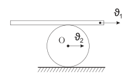
A1:2,5.
A2:7,5.
A3:10.
A4:5.
ftp-01-003: Kinematika-3ID: ftp-01-003-29
Ikki moddiy nuqta bir xil tezliklar bilan R1 va R2
radiusli (R2 = 2R1) aylanalar bo'ylab
harakatlanmoqda. Ularning normal tezlanishlari
qanday bog'langan?
A1:a1=2a2.
A2:a1=4a2.
A3:2a1=a2.
A4:4a1=a2.
ftp-01-003: Kinematika-3ID: ftp-01-003-30
Diametri 100 cm bo'lgan g'ildirak gardishidagi A
nuqta 5 m/s tezlik bilan tekis aylanma harakat
qilayotgan edi. Tormozlanish natijasida A nuqta
-2 m/s2 tangensial tezlanish bilan harakat qila
boshladi. Tormozlanish boshlanganidan 2 s
o'tgach A nuqtaning tezlik vektori bilan to'la
tezlanish vektori orasidagi burchak necha
gradusga teng bo'ladi?
A1:90°.
A2:135°.
A3:120°.
A4:60°.
ftp-01-004: Kinematika-4ID: ftp-01-004-01
Tekis harakat deb nimaga aytiladi?
A1:jismning to'g'ri chiziq bo'ylab harakatiga aytiladi.
A2:jismning bir xil vaqt oralig'ida, har xil masofa
bosishiga aytiladi.
A3:jismning bir xil vaqt oralig'ida, bir xil yoki har xil
masofa bosishiga aytiladi.
A4:jismning bir xil vaqt oralig'ida, bir xil yo'l bosishiga
aytiladi.
ftp-01-004: Kinematika-4ID: ftp-01-004-02
Yerga nisbatan v1=4 m/s, v2=3 m/s tezliklar bilan
harakatlanayotgan platformalar ustida platformalarga
nisbatan v_{1o}=3 m/s va v_{2o}=4 m/s tezliklar bilan ikki
odam rasmda ko'rsatilganidek harakatlanmoqda.
Odamlarning nisbiy tezlik moduli (m/s) qanday?
(odamning harakati platformaning harakatiga ta'sir
ko'rsatmaydi).
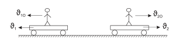
A1:0.
A2:6.
A3:14.
A4:8.
ftp-01-004: Kinematika-4ID: ftp-01-004-03
Poyezd 36 km/h tezlik bilan harakatlanmoqda.
Poyezdning harakat yo'nalishiga to'g'ri burchak ostida
10 m/s tezlik bilan shamol esmoqda. Lokomotiv
tomiga o'rnatilgan bayroq hilpirash yo'nalishi poyezd
harakat yo'nalishi bilan qanday burchakni hosil qiladi?
A1:60°.
A2:90°.
A3:45°.
A4:135°.
ftp-01-004: Kinematika-4ID: ftp-01-004-04
OX o'qi bo'ylab harakatlanayotgan moddiy nuqtaning
koordinatasini vaqtga bog'lanish grafigi asosida
moddiy nuqta harakatining yo'nalishi o'zgargan vaqt
momentlarini aniqlang (s).
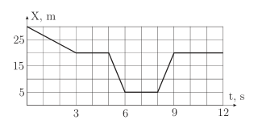
A1:8.
A2:3,5,6,8,9.
A3:3,5,8,9.
A4:harakat yo'nalishi o'zgarmagan.
ftp-01-004: Kinematika-4ID: ftp-01-004-05
A va B moddiy nuqtalar rasmda tasvirlanganidek
harakatlanmoqda, tezliklari v1=9 m/s, v2=12 m/s.
Nuqtalarning nisbiy tezligi (m/s) aniqlansin.
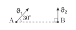
A1:333.
A2:45.
A3:117.
A4:52.
ftp-01-004: Kinematika-4ID: ftp-01-004-06
Mashina ikki punkt orasini 40 km/h tezlik bilan o'tdi.
Qaytishda o'sha yo'lni 65 km/h tezlik bilan o'tdi.
Butun yo'ldagi o'rtacha tezlikni toping (km/h).
A1:49,5.
A2:52,5.
A3:130.
A4:260.
ftp-01-004: Kinematika-4ID: ftp-01-004-07
Poyezd ikki stansiya orasidagi masofani 72 km/h
o'rtacha tezlik bilan t vaqtda o'tdi. Tezlanish va
tormozlanish uchun jami 4 minut vaqt ketdi, boshqa
vaqtda esa poyezd 80 km/h tezlik bilan tekis
harakatlandi. Poyezdning harakatlanish vaqti t ni
hisoblang.
A1:1 soat.
A2:20 min.
A3:0,5 soat.
A4:40 min.
ftp-01-004: Kinematika-4ID: ftp-01-004-08
Ikki jism bir nuqtadan bir vaqtning o'zida, bir
yo'nalishda va bir xil v tezlik bilan harakat boshlashdi:
birinchi jism tekis, ikkinchi jism esa 2 m/s2 tezlanish
bilan tekis tezlanuvchan. 5 s dan so'ng ular orasidagi
masofa necha metrga teng bo'ladi?
A1:30.
A2:25.
A3:20.
A4:15.
ftp-01-004: Kinematika-4ID: ftp-01-004-09
Avtomobilning I daraxtga nisbatan harakat tenglamasi
x = 5 + 6t −2t2 (m) ko'rinishda. Agar daraxtlar
orasidagi masofa 12 m bo'lsa, II daraxtga nisbatan
harakat tenglamasini ko'rsating.
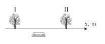
A1:x=7−6t−2t2.
A2:x=−7−6t−2t2.
A3:x=7+6t−2t2.
A4:x=−7+6t−2t2.
ftp-01-004: Kinematika-4ID: ftp-01-004-10
Jism boshlang'ich tezliksiz tekis tezlanuvchan
harakatlanib, 1 s da 3 cm yo'l o'tdi. U uchinchi
sekundda qanday yo'l o'tadi (cm)?
A1:5.
A2:10.
A3:15.
A4:20.
ftp-01-004: Kinematika-4ID: ftp-01-004-11
Tezlik – vaqt grafigidan foydalanib, t1, t2 va t3 vaqt
momentlaridagi tezlanishlarni taqqoslang.
t, s
θ, m/s
0 t1t2t3
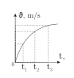
A1:a1>a2>a3.
A2:a1>a3>a2.
A3:a3>a2>a1.
A4:a2>a1>a3.
ftp-01-004: Kinematika-4ID: ftp-01-004-12
Pastda boshlang'ich tezliksiz a tezlanish bilan harakat
qilgan I jismning tezlik grafigi berilgan. II jism esa
xuddi shunday tezlanish va 2 m/s boshlang'ich tezlik
bilan harakatlandi, II jismning tezlik grafigi qaysi
ko'rinishda? (Solishtirish qulay bo'lishi uchun I va II
grafiklar bitta qilib tasvirlandi).
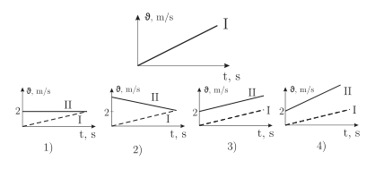
A1:1.
A2:2.
A3:3.
A4:4.
ftp-01-004: Kinematika-4ID: ftp-01-004-13
Tinch holatdan tekis tezlanuvchan harakatlana
boshlagan poyezdning ikkinchi vagoni biror ustun
oldidan t0 vaqtda o'tib ketsa, yettinchi vagon shu
ustun oldidan qancha vaqtda o'tadi? Harakat boshida
ustun ikkinchi vagon boshida turgan den hisoblang.
A1:7−62−1⋅t0.
A2:⋅t07−52.
A3:2t0.
A4:t02.
ftp-01-004: Kinematika-4ID: ftp-01-004-14
Quyida Ox o'qida harakatlangan moddiy nuqtaning
tezlik grafigi berilgan. Agar moddiy nuqtaning t1=2 s
paytdagi koordinatasi x1=-5 m ekanligi ma'lum bo'lsa,
uning t2=8 s paytdagi koordinatasi (m) qanday?
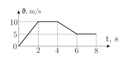
A1:-45.
A2:40.
A3:-50.
A4:45.
ftp-01-004: Kinematika-4ID: ftp-01-004-15
Mototsiklchi shosse bo'ylab to'g'ri chiziqli harakat
qilmoqda. Mototsiklchining harakat yo'nalishi Ox
o'qining yo'nalishi bilan bir xil bo'lib, harakat
tenglamasi x = 10 + 10t + t2 (m) ko'rinishida bo'lsa,
uning oltinchi sekunddagi o'rtacha tezligi (m/s)
qanchaga teng bo'ladi?
A1:20.
A2:24.
A3:10.
A4:21.
ftp-01-004: Kinematika-4ID: ftp-01-004-16
20 m balandlikdan tashlangan jism yerga uriladi va
tezligining 25 % ini yo'qotib, yuqoriga qaytib sakraydi.
Jismning yerga urilganidan toki ikkinchi marta yerga
urilguniga qadar qancha vaqt o'tadi (s)? g=10 m/s2.
A1:1,5.
A2:2.
A3:3.
A4:5.
ftp-01-004: Kinematika-4ID: ftp-01-004-17
Jism tik yuqoriga 40 m/s tezlik bilan otildi. Jismning
dastlabki 7 s dagi o'tgan yo'li va ko'chishini toping
(m). g=10 m/s2.
A1:130; 120.
A2:150; 125.
A3:125; 35.
A4:100; 110.
ftp-01-004: Kinematika-4ID: ftp-01-004-18
Jism koordinata boshidan 10 m/s tezlik bilan tik
yuqoriga otildi va ma'lum vaqtdan keyin qaytib tushdi.
Oy o'qining musbat yo'nalishi sifatida jismning
yuqoriga otilish yo'nalishini qabul qilib, jism
koordinatasining vaqtga bog'lanish grafigini ko'rsating.
g=10 m/s2.
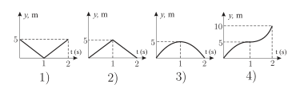
A1:1.
A2:2.
A3:3.
A4:4.
ftp-01-004: Kinematika-4ID: ftp-01-004-19
Vertikal ravishda erkin tushayotgan jismning n + 3 chi
sekunddagi ko'chishining n + 2 chi sekunddagi
ko'chishidan farqi qanday (m)? g=10 m/s2.
A1:10.
A2:13.
A3:15.
A4:20.
ftp-01-004: Kinematika-4ID: ftp-01-004-20
Jism yuqoriga tik otilgandan t1=4 s o'tgach h=240 m
balandlikda bo'lgan bo'lsa, u otilgandan to yerga
qaytib tushguncha necha sekund vaqt o'tadi? g=10
m/s2.
A1:20.
A2:14.
A3:18.
A4:16.
ftp-01-004: Kinematika-4ID: ftp-01-004-21
180 m balandlikdan erkin tushayotgan jismning oxirgi
sekundda bosib o'tgan yo'li 3-sekundda bosib o'tgan
yo'lidan necha marta katta? g=10 m/s2.
A1:2,2 marta.
A2:2 marta.
A3:3 marta.
A4:1,5 marta.
ftp-01-004: Kinematika-4ID: ftp-01-004-22
Jism 45 m balandlikdan erkin qo'yib yuborildi. Jism
yerga qanday tezlik (m/s) bilan uriladi? g=10 m/s2.
A1:20.
A2:30.
A3:35.
A4:25.
ftp-01-004: Kinematika-4ID: ftp-01-004-23
Uchish uzoqligi boshlang'ich balandligining yarmiga
teng bo'lishi uchun toshni v0boshlang'ich tezlik bilan
gorizontal yo'nalishda qanday balandlikdan otish
kerak? g-erkin tushish tezlanishi.
A1:g8v02.
A2:g4v02.
A3:4gv2°.
A4:8gv2°.
ftp-01-004: Kinematika-4ID: ftp-01-004-24
Ancha baland nuqtadan bir vaqtda ikki jism gorizontal
yo'nalishda o'zaro 600 burchak ostida bir xil v1=v2=12
m/s tezlik bilan otilgan bo'lsa, t=3 s dan keyin ular
orasidagi masofa necha metrga teng bo'ladi?
A1:36.
A2:50.
A3:48.
A4:60.
ftp-01-004: Kinematika-4ID: ftp-01-004-25
Balandlikdan gorizontga 60° burchak ostida 20 m/s
tezlik bilan otilgan jismning uchish vaqti 10 sekundga
teng. Jismning gorizontal yo'nalishdagi ko'chishini
toping (m).
A1:100.
A2:150.
A3:120.
A4:200.
ftp-01-004: Kinematika-4ID: ftp-01-004-26
Jism radiusi 1 m bo'lgan aylana bo'ylab 2 m/s tezlik
bilan harakatlanmoqda. Aylanish davrining yarmida
jism o'tgan yo'lni va ko'chish modulini toping (m).
A1:6,28; 0.
A2:3,14; 0.
A3:6,28; 2.
A4:3,14; 2.
ftp-01-004: Kinematika-4ID: ftp-01-004-27
Balandlikdan gorizontal yo'nalishda otilgan jismning
to'la tezlanishi qanday o'zgaradi? Havoning qarshilik
kuchini hisobga olmang.
A1:ortadi.
A2:kamayadi.
A3:o'zgarmaydi.
A4:notekis o'zgaradi.
ftp-01-004: Kinematika-4ID: ftp-01-004-28
25 Hz chastota bilan o'z o'qi atrofida aylanayotgan
disk gorizontga 300 burchak ostida 20 m/s boshlang'ich
tezlik bilan otildi. Disk yerga tushguncha o'z o'qi
atrofida necha marta aylanadi? g=10 m/s2.
A1:25 marta.
A2:40 marta.
A3:50 marta.
A4:75 marta.
ftp-01-004: Kinematika-4ID: ftp-01-004-29
Toshkent shahri 41° shimoliy kenglik va 69° sharqiy
uzunlikda joylashgan. Yerning o'z o'qi atrofida
aylanishidagi shaharning tezligi, shu shahardan 360
km/h tezlik bilan uchayotgan samolyotning yer sirtiga
nisbatan tezligidan kattami yoki kichik? Ekvator
uzunligi 40000 km, T=24 soat.
A1:kichik.
A2:katta.
A3:teng.
A4:samolyot uchish yo'nalishiga bog'liq.
ftp-01-004: Kinematika-4ID: ftp-01-004-30
Qanday shartlar bajarilganda moddiy nuqta to'g'ri
chiziqli tekis harakatni namoyon etadi? an-normal
tezlanish, aτ-tangensial tezlanish.
A1:an=0,aτ=0.
A2:an=0,aτ=const<0.
A3:an=0,aτ=const≤0.
A4:an=const,aτ=0.
ftp-01-005: Kinematika-5ID: ftp-01-005-01
Ko'chishning koordinata o'qlaridagi
proyeksiyalarini topish formulalarini aniqlang.
A1:Sx=x−x0,Sy=y−y0,Sz=z−z0.
A2:Sx=x+x0,Sy=y+y0,Sz=z−z0.
A3:Sx=x+x0,Sy=y−y0,Sz=z−z0.
A4:Sx=x+x0,Sy=y−y0,Sz=z+z0.
ftp-01-005: Kinematika-5ID: ftp-01-005-02
Daryo bo'yida bir-biridan 50 km masofada
joylashgan ikki punkt orasida kater qatnaydi.
Kater oqim bo'ylab suzganda bu masofani 2
soatda, oqimga qarshi suzganda 5 soatda o'tadi.
Daryo oqimining tezligini toping (km/h).
A1:7,5.
A2:15.
A3:17,5.
A4:35.
ftp-01-005: Kinematika-5ID: ftp-01-005-03
Tezligi tovush tezligidan bir yarim marta ortiq
bo'lgan reaktiv samolyot kuzatuvchidan 6 km
balandlikda uchib o'tdi. Kuzatuvchi tovushni
eshitgan paytda samolyot undan qanday masofada
(km) bo'lgan?
A1:4.
A2:6.
A3:5.
A4:9.
ftp-01-005: Kinematika-5ID: ftp-01-005-04
Jismning butun yo'l davomidagi o'rtacha tezligi 7
m/s. Grafikdan foydalanib jismning harakatlanish
vaqtini (s) aniqlang.
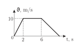
A1:15.
A2:14.
A3:12.
A4:10.
ftp-01-005: Kinematika-5ID: ftp-01-005-05
Mashina aniq sharqiy yo'nalishda 36 km/h
o'zgarmas tezlik bilan harakatlanmoqda. Agar
janubi-g'arbdan 10 m/s tezlikda meridianga
nisbatan 30° burchak ostida shamol esayotgan
bo'lsa, shamolning mashinaga nisbatan esish
tezligini aniqlang (m/s).
A1:20.
A2:15.
A3:17,3.
A4:10.
ftp-01-005: Kinematika-5ID: ftp-01-005-06
a va b vektorlar berilgan, ularning modullari
∣a∣=11 va ∣b∣=6.c =a +b bo'lsa, keltirilgan
javoblarning qaysilari c vektorning moduli bo'lishi
mumkin?
A1:8; 16; 23.
A2:2; 8; 16.
A3:8; 16.
A4:4; 16.
ftp-01-005: Kinematika-5ID: ftp-01-005-07
Kater oqim bo'ylab va oqimga qarshi bir xil yo'l
o'tdi. Bunda uning o'rtacha tezligi 0,6 km/min
bo'ldi, harakat vaqtlari esa 3 marta farq qildi.
Daryo oqimining tezligini toping (m/s).
A1:5.
A2:20/3.
A3:10.
A4:20.
ftp-01-005: Kinematika-5ID: ftp-01-005-08
Jismning harakat tezligi v = 3t −1 (m/s) qonun
bo'yicha o'zgaradi. Uning t1=1 s paytdan t2=3 s
paytgacha oraliqdagi o'rtacha tezligini toping
(m/s).
A1:2.
A2:4.
A3:5.
A4:10.
ftp-01-005: Kinematika-5ID: ftp-01-005-09
Ikki jism bir nuqtadan bir tomonga tekis
tezlanuvchan harakat boshladi. Birinchi jism tinch
holatdan 2 m/s2 tezlanish bilan, ikkinchi jism 6
m/s boshlang'ich tezlik va 1 m/s2 tezlanish bilan.
Ularning tezliklari tenglashgan paytda bir-biridan
qanday uzoqlikda (m) bo'ladi?
A1:36.
A2:54.
A3:18.
A4:9.
ftp-01-005: Kinematika-5ID: ftp-01-005-10
Quyida jismning Ox o'qidagi harakatining tezlik
grafigi berilgan. Jismning t1=4 s paytdagi
koordinatasi x1=5 m bo'lsa, uning t2=8 s
paytdagi koordinatasini (m) toping.
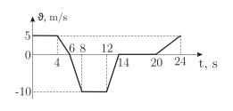
A1:15.
A2:10.
A3:20.
A4:0.
ftp-01-005: Kinematika-5ID: ftp-01-005-11
Avtomobil tekis tezlanuvchan harakat boshlab
tezligi 60 km/h ga yetganida manzilgacha bo'lgan
yo'lning 2/3 qismini bosib o'tdi. Yo'lning qolgan
qismida 60 km/h tezlik bilan tekis harakatlandi.
Avtomobil butun harakati davomidagi o'rtacha
tezligini toping (km/h).
A1:60.
A2:45,4.
A3:66,3.
A4:36.
ftp-01-005: Kinematika-5ID: ftp-01-005-12
Jismning (0-6) s vaqt intervalidagi ko'chish
modulini (m) toping.
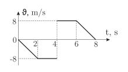
A1:32.
A2:24.
A3:40.
A4:8.
ftp-01-005: Kinematika-5ID: ftp-01-005-13
Quyida jism koordinatasining vaqtga bog'lanish
grafigi berilgan. Qaysi sohalarda jism x o'qi
bo'ylab harakat qilgan?
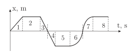
A1:1,6,7.
A2:2,5,8.
A3:3,4.
A4:1,3,4.
ftp-01-005: Kinematika-5ID: ftp-01-005-14
Boshlang'ich tezligi 5 m/s bo'lgan jism sirpanish
ishqalanish kuchi ta'sirida -2 m/s2 tezlanish bilan
harakatlanadi. Uning t1 = 0 ÷ 5 s va t2 = 0 ÷ 10 s
vaqt oraliqlaridagi o'rtacha tezliklar nisbatini
qanday?
A1:1.
A2:5.
A3:0.
A4:2.
ftp-01-005: Kinematika-5ID: ftp-01-005-15
Boshlang'ich tezliksiz H balandlikdan erkin
tushayotgan jism harakatining oxirgi sekundida
3H/4 masofani o'tdi. U qanday balandlikdan (m)
tushgan? g=10 m/s2.
A1:5.
A2:10.
A3:20.
A4:40.
ftp-01-005: Kinematika-5ID: ftp-01-005-16
Rasmda moddiy nuqta tezligining vaqtga
bog'liqlik grafigi tasvirlangan. Vaqt t=1 s
bo'lganda tezlik (m/s) qancha bo'lgan?
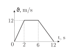
A1:9,4.
A2:10,1.
A3:6.
A4:9,1.
ftp-01-005: Kinematika-5ID: ftp-01-005-17
Kuzatuvchi tik yuqoriga otilgan jismning 45 m
balandlikdan 8 s vaqt oralatib, ikki marta
o'tganligini payqadi. Jism qanday tezlik bilan
otilgan (m/s)? g=10 m/s2.
A1:35.
A2:45.
A3:50.
A4:60.
ftp-01-005: Kinematika-5ID: ftp-01-005-18
Jism 20 m/s tezlik bilan tik yuqoriga otildi. U
necha sekundda eng yuqori nuqtaga yetadi? g=10
m/s2.
A1:1.
A2:2.
A3:3.
A4:6.
ftp-01-005: Kinematika-5ID: ftp-01-005-19
Mars sirtida jism 100 m balandlikdan 7 s da erkin
tushadi. Bunda u Mars sirtiga qanday tezlik
(m/s) bilan uriladi?
A1:28,6.
A2:47,2.
A3:14,3.
A4:9,8.
ftp-01-005: Kinematika-5ID: ftp-01-005-20
20 m/s tezlik bilan yuqoriga tik otilgan jismning
harakat boshlangandan 3 s o'tganda bosib o'tgan
yo'lini (m) toping. g=10 m/s2.
A1:30.
A2:50.
A3:20.
A4:25.
ftp-01-005: Kinematika-5ID: ftp-01-005-21
Boshlang'ich tezliksiz pastga erkin tashlangan jism
8-sekundda bosib o'tgan yo'li nechanchi sekundda
bosib o'tgan yo'lidan 5 marta katta bo'ladi?
A1:1-sekundda.
A2:3-sekundda.
A3:2-sekundda.
A4:4-sekundda.
ftp-01-005: Kinematika-5ID: ftp-01-005-22
Po'lat sharcha vertikal yuqoriga 45 m/s tezlik
bilan otildi. Oradan 2,8 s vaqt o'tgach shu
nuqtadan ikkinchi po'lat sharcha ham xuddi
shunday tezlik bilan otildi. Birinchi sharcha
ikkinchi sharcha bilan uchrashish nuqtasidan
yuqorida qanday o'rtacha tezlikka (m/s) ega
bo'lgan? Havoning qarshilik kuchi e'tiborga
olinmasin. g=10 m/s2.
A1:6,5.
A2:20.
A3:13.
A4:7.
ftp-01-005: Kinematika-5ID: ftp-01-005-23
Gorizontga nisbatan π/4 burchak ostida 36 km/h
tezlik bilan otilgan tosh qanday uzoqlikka borib
tushadi (m)? g=10 m/s2.
A1:10.
A2:2,5.
A3:5.
A4:8,7.
ftp-01-005: Kinematika-5ID: ftp-01-005-24
Jism yerdan balandligi H=40 m bo'lgan minora
tomiga qarata burchak ostida otilgan edi. Biroq u
minora asosiga kelib tushdi. Jism qancha vaqt
uchgan (s)? Havoning qarshilik kuchini hisobga
olmang. g=10 m/s2.
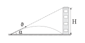
A1:1.
A2:22.
A3:2.
A4:2.
ftp-01-005: Kinematika-5ID: ftp-01-005-25
Tosh gorizontal yo'nalishda otilgan. Harakat
boshlanishidan3 s o'tgach tosh tezligini qiymati
uni boshlang'ich tezligiga nisbatan 2 marta katta
bo'lgan. Toshning boshlang'ich tezligi topilsin
(m/s). Havoning qarshiligi e'tiborga olinmasin.
g=10 m/s2.
A1:10.
A2:15.
A3:9.
A4:5.
ftp-01-005: Kinematika-5ID: ftp-01-005-26
Disk o'z o'qi atrofida tekis aylanmoqda. Agar u 7
s vaqt mobaynida 2π/3 radianga burilayotgan
bo'lsa, uning aylanish davrini toping (s).
A1:21.
A2:42.
A3:7.
A4:8.
ftp-01-005: Kinematika-5ID: ftp-01-005-27
Ekvatorning Grinvich observatoriyasidan o'tuvchi
meridianiga quyosh nuri tik tushmoqda. Qancha
vaqtdan keyin ekvatorning sana o'zgarish
meridianiga quyosh nurlari tik tushadi (min)?
Yerning o'z o'qi atrofida aylanish davri 24 soat.
A1:360.
A2:84.
A3:720.
A4:1440.
ftp-01-005: Kinematika-5ID: ftp-01-005-28
Aylana bo'ylab tekis harakatlanayotgan jismning
burchak tezligi 10 marta oshib, chiziqli tezligi
shuncha marta kamaysa, jismning markazga
intilma tezlanishi qanday o'zgaradi?
A1:o'zgarmaydi.
A2:17 marta kamayadi.
A3:10 marta ortadi.
A4:10 marta kamayadi.
ftp-01-005: Kinematika-5ID: ftp-01-005-29
Bolalar karuseli (ot o'yini) 0,5 s davomida 900
buchakka buriladi. Chastotani (Hz) aniqlang.
A1:1.
A2:2.
A3:0,5.
A4:2,5.
ftp-01-005: Kinematika-5ID: ftp-01-005-30
Qandaydir balandlikdan tosh gorizontal 12 m/s
boshlang'ich tezlik bilan otildi. Harakat
boshlanganidan 0,5 s vaqt o'tgandagi normal
tezlanishni toping (m/s2). g=10 m/s2.